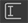
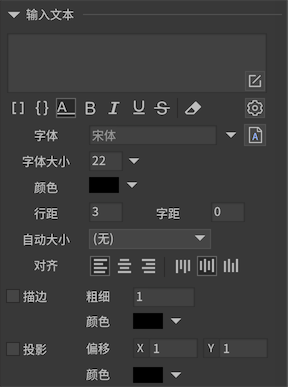
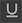
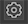
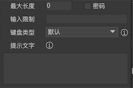

输入文本
输入文本元件用于接收用户输入文字。
实例属性
点击主工具栏中的按钮，生成一个输入文本文本元件。

 设置文本支持UBB语法。使用UBB语法可以使单个文本包含多种样式，例如字体大小，颜色等。请参考UBB语法。（Laya/Cocos2dx版本不支持普通文本里包含多种样式，如果有这个需求，请改用富文本）
设置文本支持UBB语法。使用UBB语法可以使单个文本包含多种样式，例如字体大小，颜色等。请参考UBB语法。（Laya/Cocos2dx版本不支持普通文本里包含多种样式，如果有这个需求，请改用富文本） 选中后，文本可以使用{count=100}这样的语法表达一个文本参数。请参考文本模板。
选中后，文本可以使用{count=100}这样的语法表达一个文本参数。请参考文本模板。设置文本为单行。单行文本不会自动换行，换行符也被忽略。
 设置文本为粗体。
设置文本为粗体。 设置文本为斜体。
设置文本为斜体。 设置文本为下划线。
设置文本为删除线。注意，只有部分引擎支持。
 表示文本只用作编辑器预览用途，发布时将会自动清除。
表示文本只用作编辑器预览用途，发布时将会自动清除。 点击弹出输入类型文本的详细设置：

最大长度允许输入的最大字符数量。0表示不限制。密码勾选后，输入的字符将显示成“*”号。输入限制限制用户输入的字符。一般只用在PC上。这里，不同平台的语法不一致。AS3/Starling参考资料 TextField.restrict。Egret参考资料 TextField.restrict。Laya参考资料 Input.restrict。Unity参考资料 正则表达式语法。例如限制只能输入数字的表达式是：“[0-9]”。
键盘类型设置在手机上输入时，弹出的手机键盘的类型。这个具体是否有效要看引擎的支持程度。提示文字设置输入文本内容为空时的显示内容，一般用来提示用户这里应该输入什么。这个提示文字可以使用UBB语法设置单独的颜色（不需要文本勾选UBB），例如[color=#CCCCCC]提示文字[/color]。
文本设置文本内容。当需要换行时，在编辑器里可以直接按回车。用代码赋值时需要换行可以用“\n”。字体设置文字使用的字体。如果留空，表示使用全局设置字体（这时全局字体名称将以淡灰色显示）。详细请参考字体。字体大小设置文字使用的字号。如果使用的是位图字体，你需要对位图字体设置“允许动态改变字号”，这里的选项才有效。颜色设置文字颜色。如果使用的是位图字体，你需要对位图字体设置“允许动态改变颜色”，这里的选项才有效。行距每行的像素间距。字距每个字符的像素间距。（目前H5类引擎均不支持）自动大小自动宽度和高度文本不会自动换行，宽度和高度都增长到容纳全部文本。自动高度文本使用固定宽度排版，到达宽度后自动换行，高度增长到容纳全部文本。自动收缩文本使用固定宽度排版，到达宽度后文本自动缩小，使所有文本依然全部显示。如果内容宽度小于文本宽度，则不做任何处理。 (位图字体要在字体属性里勾选’允许改变字号’才能使用自动收缩特性)无文本使用固定宽度和高度排版，不会自动换行。
对齐设置文本的对齐。单行设置文本为单行。单行文本不会自动换行，换行符也被忽略。描边设置文本的描边效果。描边粗细数值不能过大，否则效果会比较奇怪。描边在各个引擎实现的方式不同，效果也不同，编辑器的效果也仅供参考。投影设置文本的投影效果。投影效果可以看做是简化的描边效果，描边是所有方向，投影只有一个方向。投影和描边共用一个颜色设置。
GTextInput
Unity引擎可以通过UIConfig.inputHighlightColor和UIConfig.inputCaretSize修改光标的颜色和大小。注意，输入光标的大小会自动根据屏幕缩放选择最合适的宽度，一般情况下你不需要修改。
输入文本在文本改变时有通知事件：
//Unity/Cry |
在获得焦点和失去焦点时有通知事件：
//Unity |
如果要主动设置焦点，可以用
aTextInput.RequestFocus(); |
如果输入文本设置了单行，则当用户按回车键时会派发一个事件（注意，仅在PC上有效。在手机上的键盘按Done不属于支持范围内，引擎一般没有提供和手机键盘交互的接口）：
//Unity |